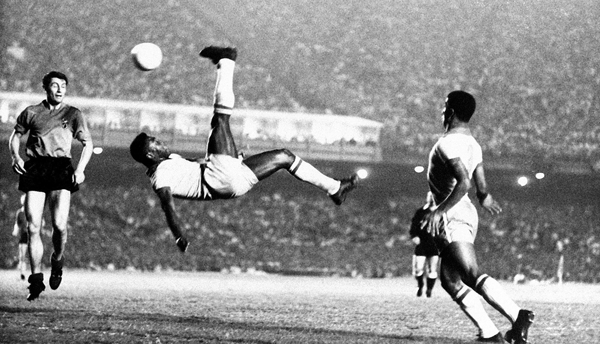

Historia del Futbol
El futbol moderno comenzo a organiarse durante el siglo XIX y con el paso del tiempo se convirtio en uno de los deportes más practicados en diferentes paises al rededor del mundo.

Momentos Importantes
- Creacion de las primeras reglas oficiales.
- Organizacion de competiciones internacionales.
- Celebracion de la primera Copa Mundial.
- Expansion del futbol profesional.